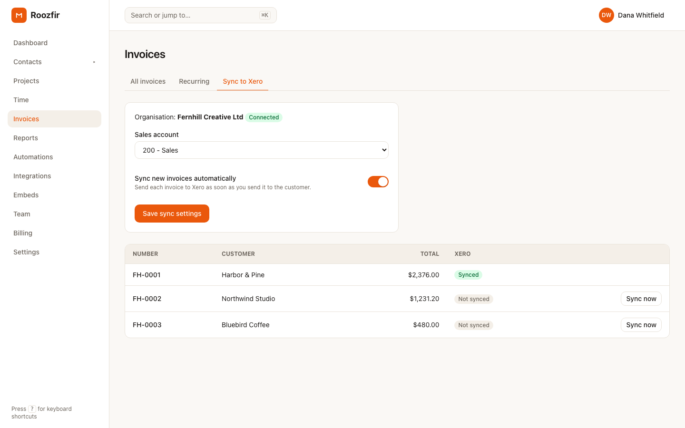
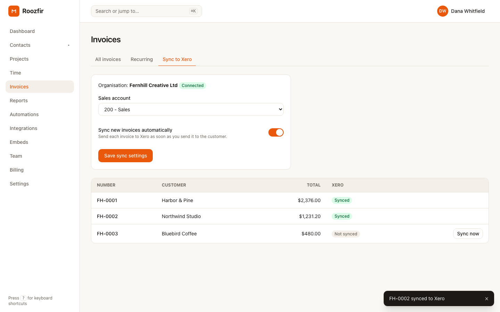

Help Center » Connecting other tools
How to sync invoices to Xero
After connecting Xero you can send invoices across automatically or one at a time.
- Open Invoices in the left-hand menu and click the Sync to Xero tab.

The Sync to Xero tab with the sync settings and a table of invoices - Choose the Sales account your invoices should land in.
- Turn on Sync new invoices automatically if you want every invoice sent as soon as you send it to the customer, then click Save sync settings.
- To send an old invoice, click Sync now on its row. The status changes to Synced.

The invoice table with one more invoice marked Synced